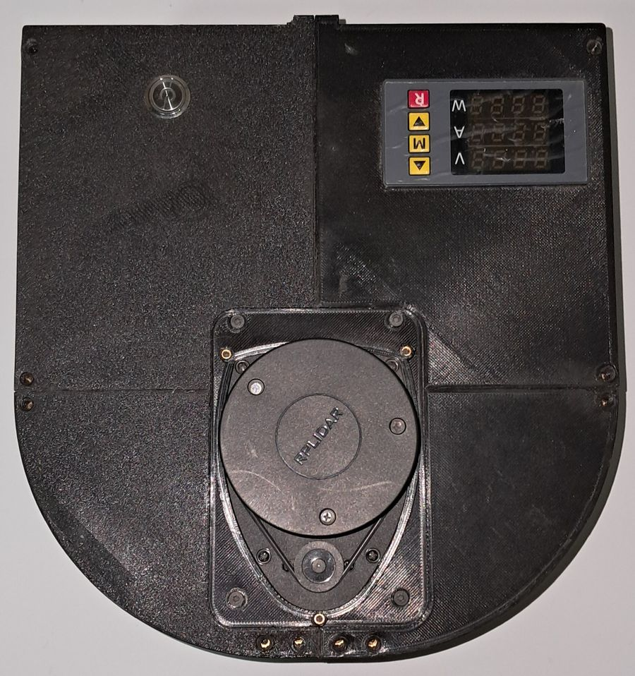

Lo esencial
- El trabajo se reparte en tres niveles. El Arduino controla las ruedas, la Raspberry Pi hace de puente y calcula la odometría, y un computador mapea, navega y explora.
- Los motores y la electrónica comparten la batería de 12 V, pero la electrónica recibe 5 V desde un regulador propio, lo que reduce la interferencia de los motores.
- Los materiales montados en el robot costaron 444 643 pesos y el proyecto completo 582 447, sin contar el computador. Es un 32 % menos que el robot comercial más cercano, aunque sin sus mismas prestaciones.
Las piezas

La locomoción usa dos motorreductores JGA25-370 de 12 V con encoders de cuadratura, uno por rueda, y una rueda loca de apoyo. Un Arduino Nano lee los encoders y ejecuta el control de velocidad de cada rueda, y un driver L298N entrega la potencia a los motores. Una Raspberry Pi 4 ejecuta la interfaz con ROS 2, lee el láser y se comunica con el computador Sec. 4.1.1.
El chasis y las cubiertas se imprimieron en 3D con PLA+, tomando como referencia un diseño abierto de robot aspiradora publicado en Thingiverse (marcuslanzoni, 2020). Los parámetros de impresión están en Constrúyelo tú.
Tabla 4.1 de la tesis.
Energía y conexiones
La plataforma tiene dos dominios eléctricos. El de potencia usa el bus de 12 V de la batería para mover los motores a través del L298N. Del mismo bus, un módulo reductor de 25 W genera un riel regulado de 5 V para la Raspberry Pi, el Arduino, el láser y los periféricos. Separar ambos rieles reduce la interferencia que los motores producen sobre la electrónica de control Sec. 4.3.1.
Quién hace qué
El robot solo no explora. Es una arquitectura distribuida en la que cada equipo hace lo que mejor le calza a su ritmo y a su capacidad de cálculo Cap. 2, Fig. 2.1.
ROS 2 en simple
ROS 2 es un conjunto de bibliotecas y herramientas para armar sistemas robóticos con piezas independientes (Macenski et al., 2022). Cada pieza es un nodo, un programa que hace una sola cosa, como leer el láser o planificar rutas. Los nodos conversan por tópicos, que funcionan como canales de radio con nombre. Unos transmiten mensajes en un canal y otros lo sintonizan, sin saber quién está al otro lado. Eso permite reemplazar una pieza sin tocar las demás Sec. 3.2.
Además de tópicos existen servicios, para preguntas con respuesta, y acciones, para tareas largas que informan su avance. Las metas de navegación viajan como acciones, un detalle que será importante en el capítulo de exploración. Por debajo, el estándar DDS descubre los nodos en la red y negocia la calidad de servicio, así que los programas pueden repartirse entre varios computadores sin un nodo maestro central.
En este robot, la misma distribución de ROS 2 corre en la Raspberry Pi y en el computador, que se comunican por una red Wi-Fi dedicada armada con un router de viaje y direcciones IP fijas. El middleware registrado es rmw_cyclonedds_cpp Anexo 3.1, Tabla A3.2.
Cuando un sistema se reparte entre dos equipos, cada mensaje del láser o de la odometría lleva una marca de tiempo, y los nodos usan esas marcas para saber dónde estaba el robot cuando se tomó cada medición. Si los relojes del robot y del computador no coinciden, el mapa puede asociar un barrido a la posición equivocada. Por eso, en sistemas ROS 2 distribuidos, es buena práctica sincronizar los relojes de todas las máquinas con un servicio de hora en la red local antes de mapear. La tesis no reporta mediciones de este efecto, pero sí documenta un problema cercano en la marca de tiempo del láser, que se explica más abajo.
El camino de una orden, del computador al motor
Cuando la navegación decide que el robot debe avanzar a cierta velocidad, esa orden cruza tres equipos y tres límites antes de mover una rueda. Presiona el botón para seguirla paso a paso.
Hay dos ritmos que no están sincronizados entre sí. La interfaz de la Raspberry envía referencias y pide los encoders a 30 Hz. El firmware del Arduino programa su control cada 33 ms con su propio reloj. Que las frecuencias coincidan en número no significa que estén alineadas en el tiempo Anexo 3.5.
El idioma entre la Raspberry y el Arduino
Conversan con un protocolo de texto por el puerto serie, con comandos de una letra terminados en retorno de carro. Durante la operación normal se usan dos. El comando m fija la referencia de cada rueda en ticks por ciclo, y el comando e pide los conteos acumulados de los encoders Tabla A4.2.
| Comando | Qué hace | Responde |
|---|---|---|
e | Lee los conteos acumulados de los encoders izquierdo y derecho. | dos enteros |
m | Fija la referencia de cada rueda en ticks por ciclo. Con ambas en cero, detiene los motores y reinicia el control. | OK |
k | Fija la referencia en m/s. Lo usaron los scripts de captura y sintonía. | OK |
j | Informa la última velocidad medida de cada rueda, en m/s. | dos valores |
o | Aplica un PWM directo a cada motor, sin control. Sirvió para identificar el modelo de las ruedas. | OK |
z, u, n | Cargan ganancias por rueda o comunes, y leen las ganancias guardadas. | OK u ocho valores |
Un programa propio para leer el láser
En el robot real el RPLidar A1 no se lee con el controlador del fabricante, sino con un nodo escrito para este trabajo que se comunica a 115 200 baudios por el puerto serie de la Raspberry Anexo 3.4. Al arrancar reinicia el sensor, consulta su estado de salud y no publica nada si el sensor informa un error.
Cada 50 ms lee lo que llegó, descarta los paquetes que no pasan la verificación del protocolo y agrupa las mediciones por vuelta. Una vuelta se publica solo si reúne al menos 180 mediciones. Luego reparte la vuelta en 230 sectores de unos 1,57°, guarda la distancia más corta de cada sector y deja como infinito lo que está fuera de 0,15 a 12 m. También invierte el sentido del ángulo, para que coincida con la convención de ROS, donde los ángulos crecen en sentido antihorario.
Cada barrido lleva la hora en que se publicó, no la hora de su primera medición. Por eso los nodos que lo usan lo asocian a una posición del robot algo posterior a la real, y el desfase crece con la velocidad, sobre todo en los giros. La tesis lo deja escrito y aclara que su efecto sobre los mapas no se cuantificó.
Seguridad: tres formas de detener el robot
- Hombre muerto en el mando. La teleoperación con mando inalámbrico solo envía órdenes mientras se mantiene presionado un botón. Al soltarlo, el robot se detiene Sec. 4.3.5.
- Prioridad humana. El multiplexor twist_mux elige una sola fuente de órdenes y da prioridad al mando sobre Nav2, así que una persona puede retomar el control en cualquier momento.
- Detención automática. Si el Arduino pasa 2 segundos sin recibir órdenes de movimiento, detiene los motores. Protege ante una caída de la red o de un nodo Sec. 4.4.4.
Cuánto costó y con qué se compara
Los montos son valores pagados entre abril de 2024 y julio de 2026, en pesos chilenos nominales. Los kits de tornillería y cables se cuentan completos, aunque se usó solo una parte. Ningún monto incluye el computador, que es necesario porque ahí corren el mapeo, la navegación y el explorador Anexo 1.1.
El tipo de cambio de 963 pesos por dólar es el promedio del dólar observado de octubre a diciembre de 2024, porque el 68 % del gasto se hizo ese año Anexo 1.2. Con eso, el robot costó un 32 % menos que el TurtleBot 3 Burger y el proyecto completo un 11 % menos.
El Burger trae una unidad inercial y actuadores con controlador y encoder integrados, que este robot reemplaza con piezas separadas de menor costo. La comparación dice que el prototipo queda por debajo del precio de la plataforma comercial de entrada, no que ofrezca lo mismo por menos Anexo 1.2. Lo que sí gana quien lo construye es acceso a cada capa, desde el firmware hasta la exploración.
Qué se adaptó y qué es propio
| Paquete | Rol | Origen |
|---|---|---|
articubot_one | Modelo URDF del robot, configuración de control, SLAM, navegación y simulación. | Adaptado de Newans (2023) |
diffdrive_arduino | Interfaz de ros2_control entre ROS 2 y el Arduino. | Adaptado de Newans (2022a) |
ROSArduinoBridge | Firmware para encoders, motores y control de ruedas. | Adaptado de Newans (2022b), bifurcación de HBRC |
explore_lite | Exploración por fronteras. | Adaptado de Alvarez (2021), port a ROS 2 de Hörner (2017) |
pid_config | Scripts de captura, identificación del modelo de cada rueda y sintonía con PSO. | Elaboración propia |
Malentendidos frecuentes
El computador es el maestro y el robot el esclavo.
ROS 2 no tiene nodo maestro. Es una arquitectura distribuida en la que el robot hace el control rápido y el computador el cálculo pesado.
Si la red se pone lenta, la odometría se equivoca.
La odometría se calcula en la Raspberry con sus propios conteos. Una red lenta puede retrasar órdenes, pero no inventa giros de rueda.
El firmware se programó desde cero.
Se adaptó de un proyecto abierto, con ganancias por rueda, bandas muertas y la resolución de los encoders de este robot.